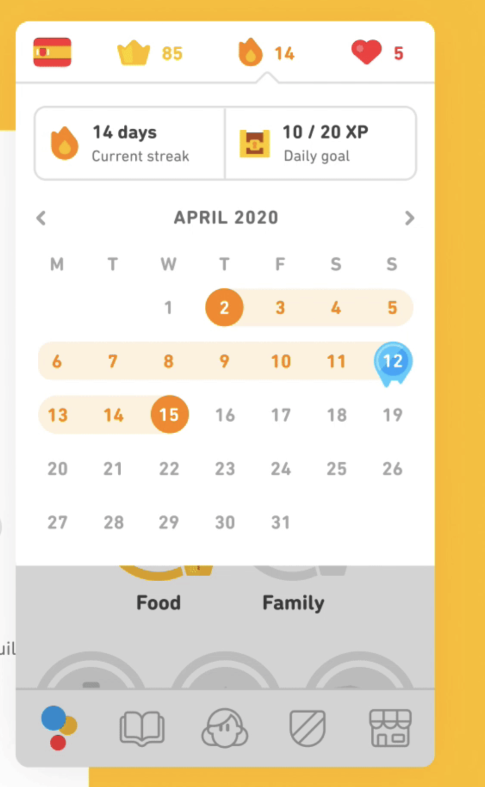
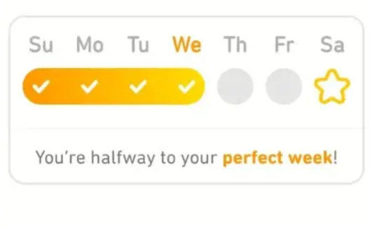
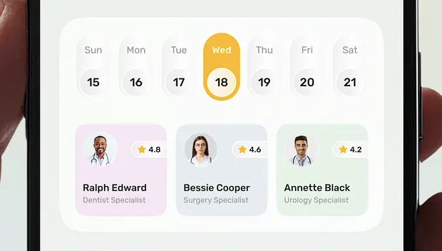

Home-Screen: Recherche und drei Richtungen
Ziel: Home soll zuerst zum Lernen führen und erst danach Statistik zeigen. Grundlage sind REDESIGN_BERICHTE.md, deine Vorgaben in UI-Inspo/, die echten Daten im Inhaltspaket und 20 Referenzen aus Mobbin. Dieser Bericht legt nur Struktur und Reihenfolge fest. Farben, Schrift, Animation und Texte kommen erst in der Feinschliff-Phase.
- Richtung A „Heute-Karte“ wird umgesetzt.
- Ein Streak-Tag zählt ab der ersten Übung des Tages.
- Lücke: Streak fällt auf 0, geholte Sterne bleiben (Kalender + Wochenzahl).
- Streak-Leiste wie
streak4mit Häkchen im gefüllten Balken; verpasster Tag = grauer Kreis mit ×. Siehe neue Zustandsübersicht in Abschnitt 2. - Kästchen: vorerst Im Aufbau · Gemeistert · Wörter geübt („mal schauen“ – im Prototyp prüfen).
- Rohtranskripte gelesen – Abschnitt 4 ist entsprechend neu geschrieben.
1 · Was Home heute falsch macht
Aus REDESIGN_BERICHTE.md, Abschnitt „Home zeigt zuerst die Verwaltung des Lernens“. Ich habe die Punkte mit dem aktuellen Code abgeglichen (lib/screens/home/).
| Problem | Wo im Code | Was das neue Home lösen muss |
|---|---|---|
| Statistik kommt vor dem Lernen. Reihenfolge: Wochenkarte → 5 Statistikzeilen + Fußnote → Stapel → Stories. | home_screen.dart, vocab_progress.dart | Der nächste Lernschritt steht oben. Statistik wird kompakt und lässt sich bei Bedarf aufklappen. |
| Information und Handlung sind getrennt. „12 Wiederholungen verfügbar“ ist nur Text, gestartet wird über den Play-Knopf in der Leiste. | VocabProgress | Neben der Zahl der fälligen Übungen steht direkt ein Startknopf. |
| Home erklärt das eigene System („Ein Wort kann mehrere Übungen haben“). | vocab_progress.dart:79 | Erklärungen wandern in Bottom Sheets und erscheinen erst nach einem Tipp. |
| Überall dieselben Container: Wochenkarte, Stapel-Kacheln und Detailflächen haben gleiche Rahmen und gleiches Gewicht. | weekly_goal_card.dart, deck_tile.dart | Genau eine dominante Fläche, alles andere leiser. |
| Stapel-Kachel mit 6 Zeichen um einen Titel: Tönung, Kontur, Icon im Ring, Prozent, Blitze, „Aktiv“. | deck_tile.dart | Höchstens Name, ein Fortschrittsbalken und das Niveau als Text. |
| Toter Profilknopf (Handler leer). | app_shell.dart _notYetRouted | Der Knopf entfällt. In der Kopfzeile stehen dafür Streak und Einstellungen. |
| Story-Cover sind Platzhalter, im hellen Modus steht dunkle Schrift auf dunklem Cover. | story_carousel.dart | Die Karte ist in sich geschlossen und auf Illustrationen vorbereitet (siehe deine Vorgabe). |
2 · Deine festen Bausteine (aus UI-Inspo)
Diese Teile sind in allen drei Richtungen gleich. Die Richtungen unterscheiden sich nur darin, wo und wie groß sie stehen.
A · Streak in der Kopfzeile
Flamme mit Zahl (aktueller Streak). Ein Tipp öffnet den Kalender als Sheet, angelehnt an kalender1:
- Oben links Aktueller Streak („14 Tage“).
- Oben rechts statt „Daily goal“ die Anzahl der Wochen, also wie oft man schon einen Stern geholt hat.
- Monatskalender: Streak-Tage sind als durchgehendes Band verbunden, Stern-Tage (jeder 7. Tag am Stück) besonders markiert.

B · Streak-Leiste mit Stern
Angelehnt an streak4, aber ohne Wochentage. Die Leiste beginnt links und endet rechts beim Stern. Der Stern steht für Tag 7 einer Serie. Nach dem Stern beginnt ein neuer Durchlauf.

Entschieden: 6 Tagesplätze plus Stern als 7. Platz. Erledigte Tage verschmelzen zu einem gefüllten Balken mit Häkchen. Offene Tage sind leere Kreise, ein verpasster Tag ist ein grauer Kreis mit ×.
(Streak = 0)
(nach Übung)
C · Lernfortschritt als Kästchen
Wie die unteren drei Kästchen in streak1: Jedes Kästchen hat einen Balken und eine kurze Beschriftung. Ein Tipp öffnet ein Bottom Sheet mit einer kurzen Erklärung.

Welche Daten es wirklich gibt (VocabBreakdown, LexicalBreakdown): fällig · im Aufbau · gemeistert · noch nicht geübt, außerdem Wörter gesamt und davon geübt. Mein Vorschlag für 3 Kästchen:
- Im Aufbau: Balken = im Aufbau / alle Übungen
- Gemeistert: Balken = gemeistert / alle Übungen
- Wörter geübt: Balken = davon geübt / Wörter gesamt
D · Stories-Karussell
Bleibt als horizontales Karussell aus Kärtchen. Die Karten bekommen später Illustrationen als Hintergrund. Deshalb wird jede Karte schon jetzt als geschlossene Fläche mit fester Textfarbe geplant, was auch den Kontrastfehler im hellen Modus behebt.
E · Stapelnamen bleiben unverändert
3 · Mobbin-Referenzen
Aus etwa 50 gesichteten iOS-Screens ausgewählt. Ein Klick auf den App-Namen öffnet den Screen auf Mobbin.
3.1 · Nächster Lernschritt zuerst
Eine große Lektionskarte mit konkretem Titel und „Start lesson“ dominiert. Der Aktivitäts-Tracker (0/7) ist nur eine schmale Zeile darüber, weitere Lektionen folgen als Karussell darunter.
Für uns: Der Tracker ist klein, die Lernkarte groß. Genau diese Gewichtung fehlt uns.
Wiederholung ist ein eigener Block mit Handlung („Review now“), das Badge mit der Zahl (21) sitzt am Review-Tab.
Für uns: Zahl der fälligen Übungen und Startknopf gehören zusammen.
„Up next“ zeigt den konkreten Inhalt mit Beispielsatz. Der Streak (4 days) ist ein separates, ruhigeres Modul darunter.
Für uns: Zuerst kommt der Inhalt, danach der Streak. Der Beispielsatz macht neugierig.
Der Hero oben enthält Thema, Dauer („8 min“) und einen großen Startknopf. Die Statistik (Activities, Time) steht weit unten und ist klein.
Für uns: Eine Zeitangabe macht den Start leichter, aber nur wenn wir sie verlässlich schätzen können.
„Jump back in“ zeigt Setname, Fortschrittsbalken (68/68) und „Continue“ in einer Karte. Auch lange Namen werden sauber abgeschnitten.
Für uns: Ein Muster für eine Stapelkarte, die auch mit langen Stapelnamen funktioniert.
Wirkt verspielt ohne Maskottchen: Collage aus Wortkarten, ein einziger schwarzer Startknopf und „Review later“ als leise Alternative.
Für uns: Spielerisch, aber erwachsen. Genau die Balance zwischen „nicht wie Duolingo“ und „nicht trocken“.
Der Kurs-Hero zeigt den Fortschritt im Text („Day 4 of 28“) statt in einem Diagramm. Darunter folgt „Up Next“ als Karussell mit Illustrationen.
Für uns: Fortschritt in Worten kann ruhiger wirken als ein Balken.
Der nächste Schritt sitzt als feste Karte unten mit „Start“ und ist immer im Daumenbereich. Der Streak erscheint nur als kurzer Banner („Streak extended!“).
Für uns: Den Startknopf in Daumennähe halten. Unser Play-Knopf in der Leiste leistet das bereits.
Oben steht ein Statistikblock mit lauter Nullen (0 Tage, 0 key points, 0 minutes). Für neue Nutzer ist er leer und sagt nichts.
Für uns: Das ist genau unser heutiges Problem. Leere Zahlen dürfen nicht der erste Eindruck sein.
3.2 · Streak, Wochen und Kalender
„Day streak“ links, „Weeks in a row“ rechts, darunter der Monatskalender und Rekorde. Das ist fast genau deine Vorgabe.
Für uns: Direkte Vorlage für den Kalender-Sheet (Tage + Wochen).
„Current streak“ und „next streak goal“ stehen nebeneinander. Erfüllte Tage tragen ein eigenes Symbol statt nur Farbe.
Für uns: Stern-Tage im Kalender mit dem Sternsymbol markieren, nicht nur mit Farbe. Das hilft auch bei Farbschwäche.
Große Zahl in Serifenschrift, dazu der Kalender. Unter dem Kalender steht ein erklärender Satz, wie man einen „Streak Freeze“ bekommt.
Für uns: Unter dem Kalender ist Platz für einen Satz wie „So bekommst du einen Stern“.
Eine Leiste mit Meilensteinen (7 · 14 · 30). Ein Ziel in Sicht motiviert, weil der Abstand dazu sichtbar ist.
Für uns: Bestätigt die Idee einer Leiste, die auf den Stern zuläuft.
Strava zählt den Streak in Wochen und markiert jede Woche mit einem Kreis am Zeilenende. Das ist nachsichtiger als ein reiner Tages-Streak.
Für uns: Die Wochenzahl ist die nachsichtigere Kennzahl und passt zu deiner Stern-Idee.
Streak-Karte mit Abzeichen pro Tag, darunter 2×2 Kennzahl-Kacheln und unten „Practice now“.
Für uns: Zeigt, wie schnell Kachelraster nach Dashboard aussehen. Deshalb nur eine Reihe mit 3 Kästchen.
3.3 · Statistik per Bottom Sheet erklären
Aufbau: Titel, großer Wert, Skala mit Einordnung, zwei kurze Absätze und „Done“. Eine sehr klare Reihenfolge.
Für uns: Vorlage für die Sheets der 3 Kästchen: Zahl, Balken, „Was bedeutet das?“, „Wie steigt es?“.
Das kurze Sheet beantwortet genau eine Frage („How we work out…“) mit zwei Unterpunkten.
Für uns: Hierhin wandert der Hinweis „Ein Wort kann mehrere Übungen haben“, der heute auf Home steht.
3.4 · Stories als Karussell
Die große Karte nimmt fast die ganze Breite ein, die nächste lugt am Rand hervor. Das signalisiert „hier kann man wischen“. Der Fortschritt beim Hören ist als Mini-Balken direkt in der Karte.
Für uns: Ein Fortschrittsbalken „weitergelesen bis …“ in der Story-Karte.
Karten ganz ohne Bild: großer Serifentitel, Lesezeit und Pfeil. Sie unterscheiden sich durch ihren Inhalt, nicht durch Dekoration.
Für uns: Eine gute Übergangslösung, bis die Illustrationen fertig sind, deutlich besser als ein blasses Themenwort.
„Continue reading“ ist eine schmale, wischbare Zeile ganz oben. Wer etwas angefangen hat, steigt mit einem Tipp wieder ein.
Für uns: Eine angefangene Story kann sich wie ein offener Faden anfühlen und zum Weiterlesen ziehen.
4 · Mikrointeraktionen & Psychologie – Auswertung der Rohtranskripte
Gelesen: alle zuvor offenen Transkripte A5, A7, B4, B6, B8, B9, B10 sowie die thematisch direkt angrenzenden A3, A6, B15. Die meisten Videos stammen von Agenturen, die im selben Atemzug Beratung verkaufen; Zahlen wie „Duolingo verdoppelte DAU durch Animationen“ sind deren Behauptungen und nicht geprüft.
4.1 · Was die Videos konkret sagen
| Quelle | Mechanik | Kern |
|---|---|---|
| A3 | Emotionales Feedback | Nicht nur ein grünes Häkchen, sondern eine kurze Reaktion, die sich ermutigend anfühlt (Bounce, Glow, Funkeln). Kleine Erfolge feiern; Fortschritt (Streaks, Level) mit Bewegung zeigen. Bei Phantom/Revolut: Politur = Vertrauen. |
| A5 | Handwerk für „fühlt sich besser an als iOS-Standard“ | (1) Übergänge animieren, komplexe Animationen in Teilschritte zerlegen. (2) Eigene Illustrationen v. a. für Leerzustände. (3) Haptik fast überall, aber abgestuft: leicht bei häufigem Tippen, stärker bei wichtigen Aktionen. (4) Eine einheitliche Icon-Familie; aktiver Tab = gefüllte Variante. (5) Geschmack durch ständiges Ansehen guter Apps. |
| A6 | Peak-End-Regel (Kahneman) | Man erinnert den intensivsten Moment und das Ende. Pro Ablauf einen Höhepunkt bewusst gestalten (z. B. Meilenstein) und das Ende mit Abschluss, Zusammenfassung und Ausblick versehen („Du warst heute da“). Negative Momente (Warten, Fehler) aktiv entschärfen. |
| A7 | Smart Defaults · Goal-Gradient · Reziprozität · IKEA-/Besitzeffekt · Verlustaversion · Kontrast | Vorbelegte Werte sind Empfehlungen. Nie bei 0 % starten – Fortschritt beschleunigt sich nahe am Ziel. Erst Wert geben, dann etwas verlangen. Was man selbst gebaut hat, gibt man ungern auf. Verlust wiegt doppelt (Beispiel mit Countdown/„I'll risk it“ ist offen manipulativ). |
| B4 | „Tick-Tock“-Uhr | Etwas verändert sich nach einer Uhr, auch wenn man nicht hinsieht (FarmVille-Ernte verrottet, Hinge-Standouts verfallen nach 24 h). Erzeugt eine offene Schleife (Zeigarnik) und Verlustangst. |
| B6 | Gefühl, gesehen zu werden | Barnum-Effekt (generisch, aber persönlich formuliert), Aufwand steigert empfundenen Wert, Identitäts-Label (16 Personalities), teilbarer „Flex“ aus echten Daten (Airbuds-Wochenrückblick, Spotify Wrapped, Wordle-Raster). |
| B8 | Unsichtbare Rangliste | Vergleich am Moment des Abschlusses zeigen, Vergleichsgruppe klein halten (lokal = gewinnbar), Anerkennung menschlich gestalten. |
| B9 | Was an Gamification wirklich wirkt | Punkte/Badges/Ranglisten allein scheitern oft. Zu viele Spielsysteme kippen (S-Kurve, Habitica). Streak-Falle: je länger, desto mehr Pflicht statt Lust; Regulierer schauen hin. Besser: Abschlussdrang (Apple-Ringe: ein fast geschlossener Kreis will geschlossen werden), variable Belohnungshöhe (Vorfreude) und Kompetenz-Feedback („du bist besser geworden“ statt „du warst oft da“). |
| B10 | Craving · Infinite Game · Status | Unvorhersehbare Belohnungen (Skinner, Finch-Entdeckungen) – Empfehlung: überwiegend transparent, mit eingestreuter Überraschung. Streaks, die sich zu etwas Bleibendem aufsummieren (Diamanten bei 7/42 Tagen). „Keinen Endzustand“ und sichtbarer Status als Bindung. |
| B15 | Rückkehr-Schleife | Belohnungen und Erinnerungen allein bilden laut Bristol-Studie keine dauerhafte Gewohnheit; wirksam ist die Kopplung an eine bestehende Routine (nach dem Kaffee …). Gewohnheiten brauchen 18–254 Tage. Forgiveness Design: was nach einem verpassten Tag passiert, entscheidet (Streak-Freeze, Pausenmodus, verschobene Frist). |
4.2 · Was davon ins neue Home fließt
| Prinzip | Konkret im Home (Richtung A) | Quelle |
|---|---|---|
| Abschlussdrang | Die Streak-Leiste ist ein „Ring zum Ausrollen“: 6 Plätze + Stern. Der fehlende Rest bis zum Stern wird immer benannt („Noch 3 Tage“). Das Tagesziel in der Heute-Karte ist ein Balken, der sich schließen will. | B9, A7 |
| Streak, der sich aufsummiert | Deine Regel „Streak fällt auf 0, Sterne bleiben“ ist genau das: Die Wochensterne sind bleibender Besitz (Kalender + Wochenzahl im Sheet). Ein Bruch tut weniger weh, weil nicht alles weg ist. | B10, B9 |
| Forgiveness nach einer Lücke | Kein Schuldtext. Nach einem verpassten Tag zeigt Home „Neuer Anlauf – deine 3 Sterne bleiben“ und die Heute-Karte ist so leicht wie möglich (kleine Menge zuerst). | B15 |
| Ehrliche „Uhr“ | Unser SRS ist bereits eine echte Uhr: Wörter werden mit der Zeit fällig, ohne dass wir etwas „verrotten“ lassen müssen. Die Heute-Karte zeigt diese Zahl als Grund zur Rückkehr – ohne künstlichen Verfall. | B4 (entschärft) |
| Kompetenz statt Punkte | Keine XP, keine Badges. Die 3 Kästchen messen echte Übungen und Wörter. Höchstens ein dauerhaftes Hauptmaß, das man „verfolgt“ – Vorschlag: Gemeistert. | B9, B10 |
| Wenige Systeme | Streak + Sterne + 3 Kästchen + Tagesziel – und nicht mehr. Keine Rangliste, keine Level, keine Währung (S-Kurve). | B9 |
| Ein Höhepunkt | Der Stern-Tag ist der eine geplante Peak auf Home (Leiste läuft zum Stern, Stern „landet“ im Kalender). Ende-Moment gehört zur Sitzungszusammenfassung – für später vorgemerkt. | A6, A3 |
| Offene Schleife | Angefangene Story mit „weiter bei …“ im Karussell; angefangener Stapel mit Fortschritt. | B4, A7 |
| Nie bei null wirken | Ehrlich umgesetzt: Kein erfundener Startfortschritt. Stattdessen zählt die erste Übung sofort als Streak-Tag, und neue Nutzer sehen keine Null-Statistik, sondern „Leg los mit deinem ersten Stapel“. | A7 (ohne Fake) |
4.3 · Für den Feinschliff vorgemerkt (Mikrointeraktionen)
- Abgestufte Haptik (A5): leicht bei Kästchen/Sheets, mittel bei „Jetzt üben“, deutlich beim Stern.
- Leiste füllt sich animiert beim Öffnen, wenn heute ein Tag dazukam; neues Häkchen „ploppt“ (A3).
- Stern-Moment: Stern füllt sich, kurze Glanz-/Funkel-Reaktion, danach im Kalender sichtbar (A6 Peak).
- Sheets kommen von unten und verschwinden dorthin; Kästchen → Sheet als zusammenhängende Bewegung.
- Gedrückt-Zustand auf allen Karten; aktiver Tab mit gefüllter Icon-Variante, eine einheitliche Icon-Familie (A5).
- Illustrierte Leerzustände statt Text (A5) – passt zu den geplanten Story-Illustrationen; ohne Duolingo-Maskottchen.
- Kontrollierte Überraschung (B10, B9): z. B. beim Stern ein zufällig gewähltes eigenes gemeistertes Wort als „Wort der Woche“. Braucht deine Zustimmung, weil es eine kleine neue Funktion wäre.
- Teilbarer Wochenrückblick (B6 „Flex“ aus echten Daten) – Idee für später, nicht Home-Phase.
4.4 · Bewusst nicht übernommen
- Verlust-Countdowns und beschämende Ablehnen-Texte (A7 „I'll risk it“).
- Künstlicher Verfall, um Rückkehr zu erzwingen (B4 FarmVille/Hinge), und Benachrichtigungs-Dauerfeuer.
- Scheinpersonalisierung nach Barnum (B6) und manipulierte Zufallsquoten (B10 MMR).
- „Nie einen Endzustand erlauben“ (B10): Bei uns darf „Geschafft für heute“ ein echtes Ende sein.
- Soziale Ranglisten/öffentlicher Status (B8, B10): Die App hat keine sozialen Funktionen; wäre eine Produktentscheidung, kein Redesign.
5 · Drei Richtungen
Alle drei enthalten die festen Bausteine aus Abschnitt 2. Die Wireframes sind bewusst grau gehalten, denn sie zeigen nur Reihenfolge und Gewichtung, noch kein Aussehen. Orange markiert die eine Hauptaktion und die Streak-Elemente.
A · „Heute-Karte“ Empfehlung
Idee: Eine einzige große Fläche sagt, was heute ansteht, und startet es. Alles andere folgt darunter in absteigender Wichtigkeit.
Reihenfolge: Kopfzeile mit 🔥 → Heute-Karte (fällige Übungen, neue Wörter, aus welchen Stapeln, Tagesziel-Balken, „Jetzt üben“) → Streak-Leiste mit Satz → 3 Fortschritts-Kästchen → Stories-Karussell → Deine Stapel (kompakte Liste, max. 3).
Zustände der Heute-Karte: Übungen fällig → „Jetzt üben“. Nichts fällig, aber neue Wörter vorhanden → „Neue Wörter lernen“. Tagesziel erreicht → „Geschafft für heute“ mit leisem „Weiter üben“. Erster Start → „Leg los mit deinem ersten Stapel“.
- Löst den Hauptkritikpunkt direkt: Handlung vor Statistik, Zahl und Knopf zusammen.
- Das Tagesziel bekommt einen sinnvollen Platz, denn im Kalender-Sheet ersetzt die Wochenzahl ja das „Daily goal“.
- Lässt sich am leichtesten auf den echten Code übertragen, weil alle Daten schon da sind.
- Klare Hierarchie: eine dominante Fläche, der Rest leiser.
- Die Heute-Karte und der Play-Knopf starten dieselbe Sitzung („Gemischt“). Das ist gewollt, muss aber visuell als dieselbe Aktion lesbar sein.
- Die Streak-Leiste ist hier Nebendarsteller und wirkt weniger verspielt als in B.
B · „Wochenbogen“
Idee: Die Streak-Leiste ist die Bühne. Wochenziel und Tagesaktion verschmelzen zu einer Karte, darin ist Platz für eine spätere Illustration, ähnlich wie bei streak2, nur ohne Maskottchen.
Reihenfolge: Kopfzeile mit 🔥 → Wochenkarte („Tag 5 von 7“, große Leiste mit Stern, fällig/Tagesziel, Startknopf) → 3 Kästchen → „Weiter mit“ als Stapel-Karussell → Stories-Karussell.
- Die verspielteste der drei Richtungen, der Fortschritt zum Stern fühlt sich wie ein kleines Spiel an.
- Streak und Lernen sind sichtbar verbunden: Wer üben will, füllt die Leiste.
- Bietet die meiste Fläche für einen besonderen Stern-Moment im Feinschliff.
- Die Gefahr, dass der Streak wichtiger wirkt als der Inhalt, also wieder „Verwaltung zuerst“, nur hübscher.
- Bei Streak 0 oder nach einer Pause ist die Bühne leer. Dieser Zustand braucht eine eigene Gestaltung.
- Zwei horizontale Karussells direkt hintereinander (Stapel und Stories) wirken unruhig.
- Die Kopfzeilen-Flamme und die große Leiste zeigen beide den Streak, also doppelt.
· weiter bei Absatz 3
C · „Lesen zuerst“
Idee: Der Inhalt selbst ist der Hero. Die Übung wird zu einer kompakten Leiste oben, die Stories bekommen die größte Fläche, so wie bei Apple News oder Waking Up.
Reihenfolge: Kopfzeile mit 🔥 → kompakte Heute-Leiste (fällig + „Üben“ + kleine Streak-Leiste) → großes Stories-Karussell → 3 Kästchen → Deine Stapel.
- Passt am besten zur Positionierung „Lesen zuerst“, die Home heute versteckt.
- Wirkt am wenigsten wie ein Dashboard und am stärksten nach Magazin.
- Die späteren Illustrationen kommen hier am besten zur Geltung.
- Derzeit nur 1 Story im Paket, das große Karussell hätte also eine einzige Karte. Das wirkt leer, bis mehr Stories da sind.
- Die fälligen Wiederholungen, also die tägliche Kernaufgabe, sind weniger prominent.
- Ohne Illustrationen wirken große Karten heute schnell wie Platzhalter, das alte Problem.
6 · Vergleich & Empfehlung
| A · Heute-Karte | B · Wochenbogen | C · Lesen zuerst | |
|---|---|---|---|
| Nächster Schritt sofort klar | ●●● | ●●○ | ●●○ |
| Spielerisch (ohne Duolingo-Look) | ●●○ | ●●● | ●○○ |
| Löst „Statistik vor Inhalt“ | ●●● | ●●○ | ●●● |
| Funktioniert mit heutigen Daten (1 Story, Streak 0) | ●●● | ●●○ | ●○○ |
| Aufwand im Code | niedrig | mittel | mittel |
7 · Entschieden & noch offen
Entschieden: Richtung A · Streak ab erster Übung · Lücke = Streak 0, Sterne bleiben · Leiste wie streak4 mit Häkchen und grauem ×-Kreis · Kästchen vorerst Im Aufbau / Gemeistert / Wörter geübt.
Noch offen (beantworte ich sonst mit meinem Vorschlag):
- ×-Anzeige: Bleibt das × sichtbar, bis du wieder übst, und startet die Leiste dann links neu? (Mein Vorschlag: ja.)
- Stapel auf Home: kompakte Liste mit max. 3 aktiven Stapeln (Vorschlag) oder ganz weglassen?
- „Wort der Woche“ beim Stern als kontrollierte Überraschung – ja/nein? Ist eine kleine neue Funktion, daher erst nach deinem Okay.